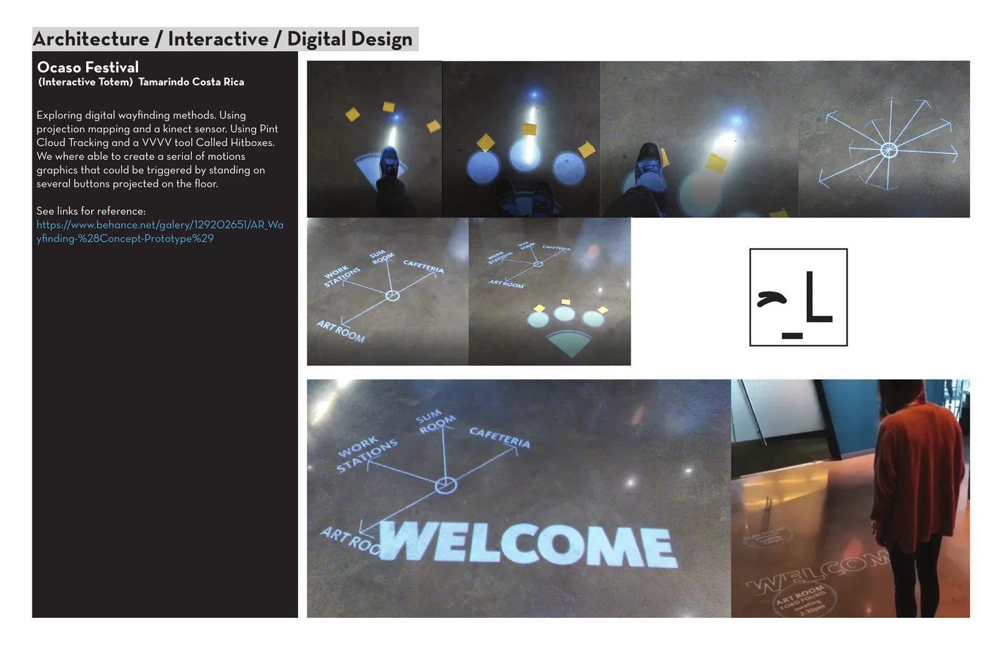
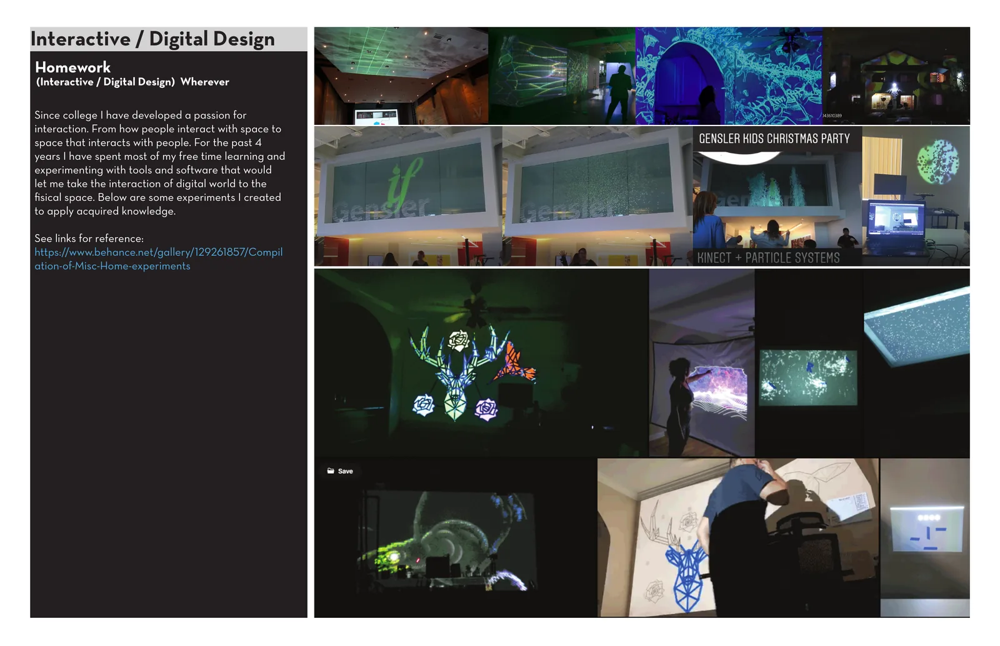
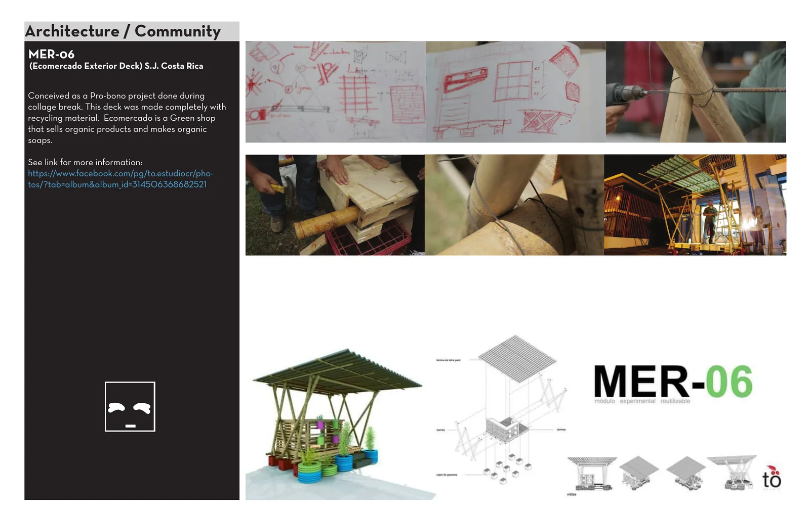
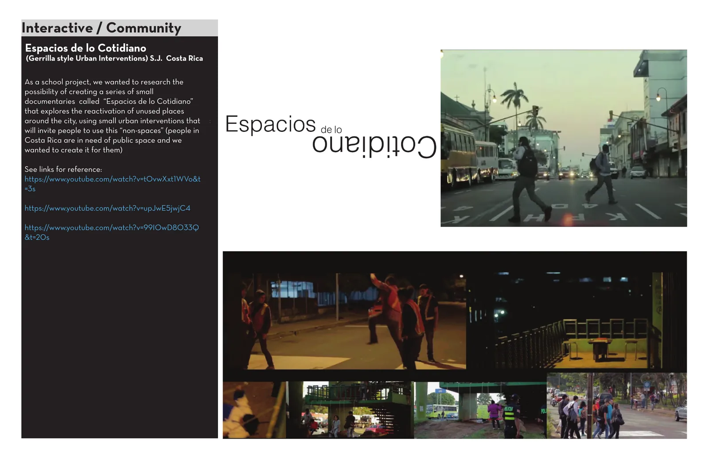

RAW Science Film Festival
Architecture + projected media · Los Angeles · 2020
Click to enlarge ↗Earlier work is kept here because it shows the continuity of the interactive side of my practice through projection, sensing, wayfinding, public space interventions and low tech prototyping.
Architecture + projected media · Los Angeles · 2020
Click to enlarge ↗
Kinect + Resolume + VVVV · Tamarindo · 2018
Click to enlarge ↗
Point cloud tracking + floor projection
Click to enlarge ↗
Projection, sensors, particles and spatial media
Click to enlarge ↗
Community / recycled material construction
Click to enlarge ↗
Guerrilla urban interventions / public space
Click to enlarge ↗